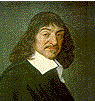
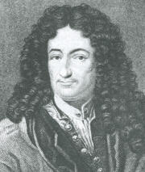
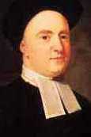
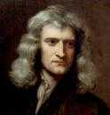

|
Descartes and Mind-Body Dualism  Rene Descartes Rene Descartes (1596-1650), who was certainly not an occult scholar or even a sympathizer, nevertheless attributed all of his philosophic ideas to images that appeared to him either in dreams or when he was in the hypnogogic state just before awakening. (In fact, he had to "prove his visibility" to keep from being associated with the Invisible College. The association of creativity with dreaaming apparently gave rise to public speculation about an actual college, perhaps diabolical, that dreamers visited in their sleep.) Mind body dualism was first formally stated in modern philosophy by Descartes. His famous cogito ego sum ("I think therefore I am") implies that only through personal consciousness can one be certain of one's own existence. He identified consciousness with mind or soul, which to him was a substance as real and as concrete as the substance he called body. Descartes defined body as extended (space-filling), physical material and defined mind as "thinking thing" (res cogitans), which was unextended (did not take up space) and was not made of any physical material, but was purely spiritual. He also posited that these two substances mutually affect each other, giving the name interactionism to his position. Leibnitz and Monadology  Gottfried Wilhelm Leibnitz Carrying on the Pythagorean-Platonic doctrine of universal harmony, Gottfried Wilhelm Leibnitz, who with Isaac Newton was the co-inventor of calculus, developed an elegant grand philosophy based on the concept of an evolving unit of consciousness called the monad. Monads for Leibnitz are the most fundamental metaphysical points which have always existed and can never be destroyed. Leibnitz felt that all matter is alive and animated throughout with monads. The monad is the principle of continuity between the physical and the psychological realms. The same principle that expresses itself within our minds is active in inanimate matter, in plants, and in animals. Thus the nature of the monad is best understood by studying the spiritual and psychic forces within ourselves. Monads themselves vary in the amount of consciousness or clarity of their perceptions. Certain physical facts, such as the principle of least action, indicated to Leibnitz an intelligence within the most basic particles in creation. On the other hand, the findings of psychology have indicated that there are areas of the mind that are unconscious in their nature. In the lowest monads everything is obscure and confused, resembling sleep. While in humanity, consciousness attains a state of apperception -- a reflexive knowledge of the self. Every monad discovers its nature from within itself. It is not determined from without; there are no windows through which anything can enter; all of its experience already exists within each monad. Both organisms and inorganic bodies are composed of monads, or centers of force, but the organism contains a central monad or "soul" which is the guiding principle of the other monads within its body. Inorganic bodies are not centralized in this way, but consist of a mere mass or aggregation of monads. The higher the organism, the more well-ordered will be its system of monads. Every monad has the power to represent the entire universe within itself. It is a world in miniature, a microcosm, a "living mirror of the universe." Yet each monad has its own unique point of view, with its own characteristic degree of clarity. The higher the monad, the more distinctly it perceives and expresses the world; the monads with which it is most closely associated constitute its own body, and these it represents most clearly. Leibnitz stated: Every body feels everything that occurs in the entire universe, so that anyone who sees all could read in each particular thing that which happens everywhere else and, besides all that has happened and will happen, perceiving in the present that which is remote in time and space.The monads form a graduated progressive series from the lowest to the highest. There is a continuous line of infinitesimal gradation from the dullest piece of inorganic matter to god, the monad of all other monads -- just as the soul is the presiding monad over the other monads within the human body. There is a parallelism between mental and physical states here. The body is the material expression of the soul. However, while the body operates according to the deterministic laws of cause and effect, the soul acts according to the teleological principle of final causes towards its ultimate evolution. These two realms are in harmony with each other. Idealism  Bishop George Berkeley Another important philosopher of consciousness in this period was Bishop George Berkeley (1685-1753), after whom the City of Berkeley, California -- where this book has been written -- was named. Berkeley was a strict idealist who tried to demonstrate that the only things we ever experience are the perceptions, thoughts and feelings within our own minds. There is no need to ever assume that anything material exists whatsoever. The external world of physics is for all we know a figment of the imagination. Look about you. Everything that you see or sense in any way is simply a representation in your minds. Is this a book you are reading? Did it take raw materials to produce? That was all somehow an illusion. But, you will say, there must be some cause of the thoughts and sensations in our minds. For Berkeley this cause is one undivided active spirit which produces these effects upon our consciousness. Although we cannot perceive this spirit itself (any more than we could perceive such nonsense as matter) we still have some notion of it, some apprehension of the greater reality beyond us. You see, we all exist in the Mind of God. As the Hindus would say, this is all simply Shiva's dream. Berkeley's philosophical conclusions have never gained ascendency within western culture. Nor have they been logically discredited. The logical cohesion of the idealist philosophy as developed in western culture by Berkeley and others (notably Hegel) and as developed by the Hindu and Buddhist philosophers of Asia has been unrivaled. Yet logical cohesion is not the sole criterion of a philosophical theory. When Samuel Johnson (who wrote the first
great English language dictionary) was asked about the theories of Berkeley,
he response was simply to kick a stone. "That's an end to that," he proclaimed.
His response has been typical of the strong gut reaction against the idealist
position. Yet, on one very important point, there is no difference between
the idealist and the materialist position. In either case, the ultimate
nature of reality is both unknown and unknowable. Whether one describes
reality as mind or as matter is more of a social convention, or a foundation
of belief, than the product of a well-reasoned inquiry. The Pythagorean
position that there may be a mathematical unification offers more promise.
Sir Isaac Newton  Sir Isaac Newton Sir Isaac Newton (1642-1727) is generally regarded as one of the greatest scientists who ever lived. He discovered the binomial theorem, invented differential calculus, made the first calculations of the moon's attraction by the earth and described the laws of motion of classical mechanics, and formulated the theory of universal gravitation. He was very careful not to publish anything not firmly supported by experimental proofs or geometrical demonstrations -- thus he exemplified and ushered in the Age of Reason. Sir Isaac Newton, who is generally thought of as the archetypal materialist scientist, was astounded by the startling, and contradictory, nature of his own theories. That gravity should be innate, inherent and essential to matter, so that one body may act upon another at a distance through a vacuum, without the mediation of anything else, by which their force and action may be conveyed to one another.... Here he has framed a major problem that remained unsolved until Einstein developed his theory of General Relativity. The problem continues to remind us of the incompleteness of a "common-sense," materialistic viewpoint. Gravity is such a common effect that it is taken for granted. Nevertheless, Einstein's understanding of gravity, while it solved Newton's problem of "action at a distance," requires that we accept that space itself is curved. The quest for a completeness in science, articulated by Sir Isaac Newton, has now found its expression in the search for a "grand unified field theory" in physics. This theory, which will be elaborated further in Section IV and in the Appendix, in its most current form echoes the Pythagorean principle of a mathematical structure underlying all of reality -- consciousness and matter. However, if we look at Newton's own personal notes and diaries, over a million words in his own handwriting, a startlingly different picture of the man emerges. Sir Isaac Newton was an alchemist. He devoted himself to such endeavors as the transmutation of metals, the philosopher's stone, and the elixir of life. Lord Keynes describes this work in the Royal Society's Newton Tercentenary Celebrations of 1947: His deepest instincts were occult, esoteric, semantic -- with profound shrinking from the world...a wrapt, consecrated solitary, pursuing his studies by intense introspection, with a mental endurance perhaps never equalled.Newton used the term ether following Descartes to refer to a hypothetical substance that permeated the entire universe and was responsible for gravitation and electromagnetism as well as sensations and nervous stimuli. He felt this ether itself was the living spirit, although he recognized that sufficient experimental proof did not exist in his own time. It was only in the twentieth century that scientists actually discarded the concept of ether, although the term is still used pervasively in occult and spiritual circles. The elucidation of the field that unifies both psychical and physical phenomena is still one of the greatest challenges facing scientific research. Newton normally spelled the word Nature with a capital and regarded her as a Being or at least a wonderful mechanism second only to God. Newton described his conception of God as: Creator and governor of this mechanistic universe, who first created the fermental aether and its principles of action, and then assigned to a lesser power, Nature, the duty of forming and operating the perceptible mechanical universe.Like most men at the close of the Seventeenth Century, Newton still believed in the existence of animal spirits in the human body. He described them as of an ethereal nature and subtle enough to flow through animal voices as freely as the magnetic effluvia flow through glass. For him, all animal motions resulted from this spirit flowing into the motor nerves and moving the muscles by inspiration. His followers, however, emphasized his
mechanistic view of the universe to the exclusion of his religious and
alchemical views. In a sense, their action ushered in a controversy that
has existed ever since. Since Newton's time, all hypotheses suggesting
the presence of a force that transcended time or space were ironically
considered to be in violation of Newton's Laws -- even though Newton himself
realized that his laws were not sacrosanct!
References . Lynn Thorndike, op. cit., Vol. VII, 544-566. . Frank Thilly, A History of Philosophy, pp. 384-399. . Thorndike, op. cit., Vol. VIII, p. 591. Thorndike here is quoting Lord Keynes. . Ibid. . Ibid. |